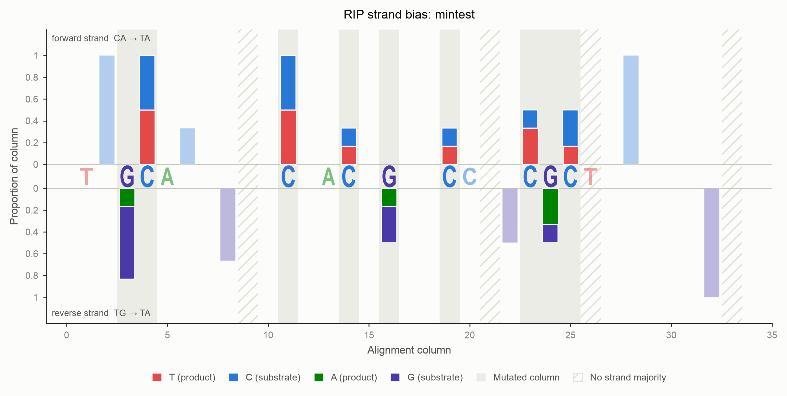
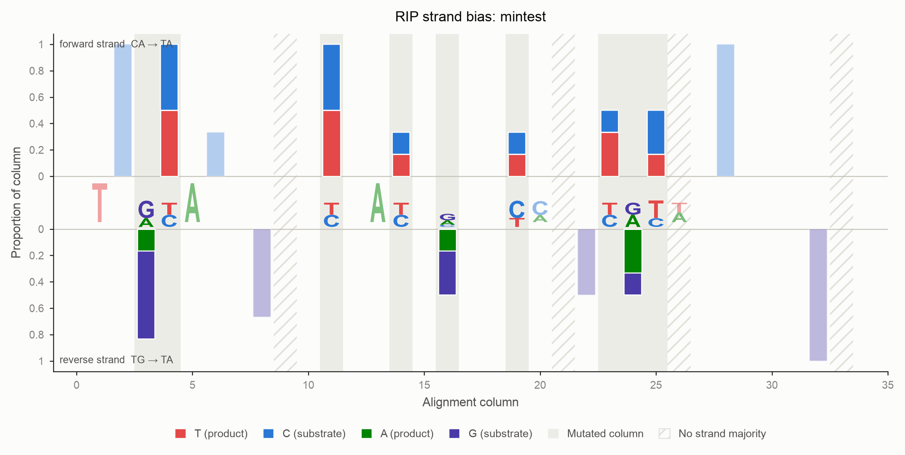
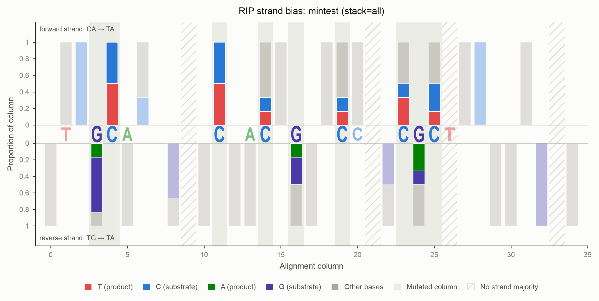

RIP strand bias
Repeat-Induced Point mutation (RIP) does not strike both strands of a duplex equally. This page explains why, how deRIP2 measures the asymmetry, and how to read the figures it produces.
The biology
RIP deaminates the cytosine of a CpA dinucleotide, turning CA into TA.
The enzyme works on either strand of the duplex, and this is where the
bookkeeping gets interesting.
Read a duplex on the forward strand. A reverse-strand CA appears on the
forward strand as TG — reverse-complement TG and you get CA. So RIP acting
on the reverse strand also produces a forward-strand TA:
forward strand read 5' -> 3'
forward-strand RIP: C A -> T A
| | | |
G T A T
reverse-strand RIP: T G -> T A
| | | |
A C A T
CA and TG are the two substrate motifs. TA is the product motif,
and it is its own reverse complement, so it carries no memory of which strand it
came from.
The critical fact is that a single round of meiotic RIP acts on one strand of
a given duplex. Each progeny sequence from one round of meiosis therefore
accumulates mutations on one strand only: either its CA sites convert, or its
TG sites convert — rarely both. A sequence with a strong strand imbalance
bears the signature of a single round of RIP. A balanced sequence has either
escaped RIP entirely, or been RIP'd repeatedly until both strands ran out of
substrate.
The statistic: RIP Strandedness Imbalance
For each sequence, count how much of the available substrate on each strand has been converted:
CA sites converted to TA TG sites converted to TA
p_fwd = ---------------------------- p_rev = ----------------------------
CA converted + CA still intact TG converted + TG still intact
RSI = p_fwd - p_rev
RSI lies in [-1, 1]. Because each proportion is normalised against the
substrate actually available on its own strand, an alignment with far more CA
sites than TG sites does not bias the score.
| Sequence | p_fwd |
p_rev |
RSI |
|---|---|---|---|
| No RIP; all substrate intact | 0 | 0 | 0 |
Every CA converted, every TG intact |
1 | 0 | +1 |
Every TG converted, every CA intact |
0 | 1 | −1 |
| Both strands converted to exhaustion | 1 | 1 | 0 |
| One strand has no substrate and no product | — | — | NaN |
RSI = 0 is ambiguous on its own
A sequence that has never been RIP'd and a sequence RIP'd to exhaustion on
both strands both score 0. Always read RSI alongside p_fwd and
p_rev, which separate the two cases: 0, 0 means untouched, 1, 1
means saturated. deRIP2's statistics table always reports both.
A strand with neither substrate nor product yields NaN, not 0. There is no
evidence either way, and reporting 0 would disguise "no data" as "perfectly
balanced".
Substrates are observed; products are inferred
This asymmetry drives the whole implementation.
An unmutated CA in a sequence is directly observed. You can read it off the
sequence with no further reasoning.
A TA, however, is only evidence of RIP if you can show it used to be
something else. deRIP2 infers this from the alignment: if some other sequence
still carries an aligned, unmutated CA in that column, then the column was
ancestrally CA and this sequence's TA is a RIP product.
Two consequences follow.
Substrates are counted everywhere; products only inside RIP columns. If
products were counted from column context but substrates only from RIP columns
too, then a sequence with no RIP at all would score 0/0 instead of 0.
A fully converted column is invisible
If every sequence in a column has converted its CA to TA, no ancestral
C survives anywhere, and the alignment carries no evidence the column was
ever a RIP substrate. Such columns cannot be recognised and do not enter the
statistic. RSI can only see RIP that at least one sibling sequence
escaped. Add more diverged sequences to the alignment to recover them.
The ambiguity, and how to resolve it
A TA dinucleotide spans two alignment columns: the T at column i and the
A at column i+1. It is evidence of forward RIP if column i holds an aligned
unmutated C. It is evidence of reverse RIP if column i+1 holds an aligned
unmutated G. When both are true, the strand of origin cannot be recovered
from the alignment.
Here is exactly that case:
col: 0 1
C A <- unambiguous forward substrate (CA, intact)
T A <- AMBIGUOUS: from CA, or from TG?
T A <- AMBIGUOUS
T A <- AMBIGUOUS
T G <- unambiguous reverse substrate (TG, intact)
C G <- CG: neither substrate nor product
Column 0 holds both C and T, all followed by A, so it is a forward RIP
column. Column 1 holds both G and A, all preceded by T, so it is a reverse
RIP column. The three TA rows sit in both.
deRIP2 exposes four policies via ambiguous=, and always reports
n_ambiguous so the choice can be audited.
| Policy | Ambiguous TA contributes |
When to use |
|---|---|---|
split (default) |
0.5 to each strand | Unbiased when ambiguity is strand-symmetric. Uses all the data. |
exclude |
nothing to either strand | Most conservative. Discards the products of heavily RIP'd sequences. |
weight |
w forward, 1 - w reverse, where w = nC(i) / (nC(i) + nG(i+1)) |
Follows the surviving evidence. Heuristic, no generative model. |
both |
1.0 to each strand | Keeps counts integral, but inflates both proportions toward 1. |
On the symmetric example above, every policy returns RSI = 0 — the alignment really is balanced. They differ only in the magnitude of the components:
| Policy | p_fwd |
p_rev |
RSI |
|---|---|---|---|
split |
0.60 | 0.60 | 0.000 |
exclude |
0.00 | 0.00 | 0.000 |
weight |
0.60 | 0.60 | 0.000 |
both |
0.75 | 0.75 | 0.000 |
The policy is not a cosmetic choice. On an asymmetric alignment the four can disagree on the sign of RSI:
Column 0 holds three intact C against a single intact G at column 1, so the
evidence for a forward origin is three times stronger.
| Policy | fwd product | rev product | p_fwd |
p_rev |
RSI |
|---|---|---|---|---|---|
split |
5.0 | 1.0 | 0.556 | 0.500 | +0.056 |
exclude |
4.0 | 0.0 | 0.500 | 0.000 | +0.500 |
weight |
5.5 | 0.5 | 0.579 | 0.333 | +0.246 |
both |
6.0 | 2.0 | 0.600 | 0.667 | −0.067 |
exclude throws away the ambiguous evidence and sees a clean forward signal;
both double-counts it and flips the sign. Report which policy you used.
CpG dinucleotides
A CG is neither substrate nor product: its C is not followed by A, and
its G is not preceded by T. But an ancestral CG can diverge to CA
(via G→A) or to TG (via C→T), and both of those are genuine RIP
substrates. deRIP2 counts them as such. This falls out of the dinucleotide
definitions and needs no special case.
Significance
deRIP2 reports a two-sided two-proportion z-test of p_fwd against
p_rev, computed with math.erfc and no SciPy dependency. Treat it as a
screening heuristic:
splitandweightproduce fractional counts, and the z-test assumes integers, so the p-value is approximate.bothkeeps counts integral but double-counts ambiguous events, inflating the trial counts and so overstating significance.- A strand with no trials gives
NaN. A pooled proportion of 0 or 1 forcesp_fwd = p_rev, givingz = 0andp = 1.
Reading the figure
Every alignment column that holds a base becomes one bar.
- Above the axis: the deamination is observed on the forward strand
(
CA→TA). - Below the axis: it is observed on the reverse strand (
TG→TA). - The product segment always touches the zero line, so the extent of RIP can be compared across columns at a glance. The unmutated substrate stacks outward, and the outer edge of the bar is the column's total occupancy.
- Columns in which the chosen
modeactually observed a transition carry a neutral grey wash behind the bar. Everything else is drawn faded: it is context, not signal. Passemphasis=Falsefor a flat render.
Because every non-gap base is either C/T or G/A, and the classifier uses a strict majority, a column is never drawn on both sides. Columns where neither strand holds a majority carry no correction, so they raise no bar; they are hatched rather than dropped silently. Nothing else is ever drawn on the central axis, which belongs to the sequence.
Adjacent bars can describe the same event
A forward event is scored at the deaminated C's column; the reverse event
of the same duplex is scored at the G's column, one position to the right.
A single physical TA can therefore raise a bar above the axis at column
i and below it at column i+1. That is the ambiguity, drawn.

Worked example
from derip2.derip import DeRIP
d = DeRIP('tests/data/mintest.fa')
d.calculate_rip()
print(d.stats_summary())
index ID GC CRI PI SI RSI p_fwd p_rev ... n_ambiguous RIP_fwd RIP_rev
0 Seq1 33.333 -1.250 0.500 1.750 0.242 0.385 0.143 ... 1 3 1
1 Seq2 22.581 -0.393 0.857 1.250 0.549 0.692 0.143 ... 1 5 1
2 Seq3 31.250 -2.500 0.500 3.000 0.312 0.455 0.143 ... 1 3 1
3 Seq4 48.387 -2.750 0.250 3.000 0.000 0.000 0.000 ... 0 0 0
4 Seq5 45.161 -1.417 0.333 1.750 -0.250 0.000 0.250 ... 0 0 1
5 Seq6 48.387 -1.467 0.333 1.800 0.000 0.000 0.000 ... 0 0 0
Read this table:
- Seq2 has the strongest forward bias (RSI +0.549): 69% of its
CAsites converted against 14% of itsTGsites. Consistent with one round of RIP on the forward strand. - Seq5 is the only reverse-biased sequence (RSI −0.250): no forward conversion at all, 25% reverse conversion.
- Seq4 and Seq6 score RSI 0 — and because
p_fwd = p_rev = 0, they are unRIP'd, not saturated. The components settle it.
Pool across the alignment and sort:
pooled = d.rsi_result.pooled()
print(f"RSI={pooled['RSI']:+.3f} p={pooled['pvalue']:.3g}")
# RSI=+0.181 p=0.11
for record in d.sort_by_rsi(): # most forward -> most reverse
print(record.id, record.annotations['RSI'])
Sequences with an undefined RSI sort to the end in both directions: they carry no evidence, so placing them at either extreme would misrepresent them.
Choosing a policy
Passing a different policy recomputes RSI; it never silently reuses a result computed under another policy.
for policy in ('split', 'exclude', 'weight', 'both'):
pooled = d.summarize_stats(ambiguous=policy)
print(policy, d.rsi_result.pooled()['RSI'])
Plotting
# Publication figure: vector output, deRIP'd consensus along the axis
d.plot_strand_bias(
output_file='strand_bias.svg',
mode='rip', # plot bars for event type {'rip', 'non_rip', 'all_deamination'}
xaxis='derip', # or 'logo' for a sequence logo, 'none'
columns='rip', # which positions to letter {'rip', 'substrate', 'all'}
stack='signal', # what each bar contains {'signal', 'product', 'all'}
scale='column', # each bar normalised to its own non-gap depth
)
Lettering the axis
columns does not choose which columns are drawn — every column is. It chooses
which positions are lettered when xaxis is 'derip' or 'logo':
columns |
Positions lettered |
|---|---|
all (default) |
Every position holding a base. |
rip |
Each RIP-like column, plus the partner base of its dinucleotide. |
substrate |
Columns holding substrate that RIP has demonstrably not touched — not RIP-like, not corrected, carrying no deamination product — plus their partners. |
A RIP motif spans two columns: the deaminated base and the base that gives it
its context. Under columns='rip' both are drawn, the site bold and the partner
faded, so a CA reads as a strong C followed by a receding A, and a TG as
a receding T followed by a strong G. Where the deRIP'd consensus carries a
gap, a muted dash is drawn — a bar is never left without a mark, and the figure
never borrows a base the consensus does not contain.
A sequence logo can replace the consensus letters. Glyph height encodes information content, so an invariant column shows one tall letter and a variable column shows a short stack:

Long alignments
There is no column cap. The figure widens to fit the alignment, so a several-kb
alignment produces a very wide vector figure that can be zoomed. Write to .svg
or .pdf; a raster target warns when the bars would fall below one pixel. Use
column_range=(start, end) to zoom into a region instead.
What the bars are made of
stack chooses which bases enter each bar:
stack |
Segments drawn |
|---|---|
signal (default) |
The RIP product and its unmutated substrate. Bases carrying no RIP signal are omitted. |
product |
The product alone — the cleanest read of where RIP struck. |
all |
Every base, with the remainder added as a translucent grey segment. |

Crucially, no choice of stack ever rescales the bar. The denominator is
always the column's full non-gap depth, so a short bar honestly reports that most
of the column was excluded rather than silently stretching to fill the axis.
Scaling
scale |
Bar height means |
|---|---|
column (default) |
Fraction of that column's non-gap bases. Every full bar reaches 1.0. |
alignment |
Fraction of all sequences. A column that is 80% gaps reaches only 0.2. |
counts |
Raw number of sequences. |
Use alignment when gap structure matters and you do not want a column backed
by two sequences to look as confident as one backed by two hundred.
From the command line
derip2 -i alignment.fa -d out -p sample \
--plot-strand-bias \
--strand-bias-xaxis derip \
--strand-bias-columns rip \
--strand-bias-stack signal \
--rsi-ambiguous split \
--sort-by-rsi \
--stats-out \
--html-report
This writes sample_strand_bias.svg, sample_stats.tsv and
sample_report.html. The report is a single self-contained file — inline SVG,
no external assets — carrying three panels (RIP-like mutations, non-RIP
deamination, and all deamination) plus the full statistics table.
The non_rip and all_deamination panels are the control: a strand bias that
appears in the RIP panel and in the non-RIP panel is not a RIP signal, it is a
property of the sequence composition.
--sort-by-rsi and --fill-index
Sorting reorders rows, so a --fill-index given as a row position refers to
a different sequence afterwards. deRIP2 re-runs the analysis against the
sorted alignment and warns if both flags are used together. The deRIP'd
consensus itself is unaffected — it is a property of the columns, not the
row order.
Colour
The figures use a palette validated for colourblind separation: worst all-pairs Machado-2009 ΔE is 13.3 against a ≥12 target, every colour clears 3:1 contrast against the surface, and all sit inside the OKLCH lightness band.
C, T and A keep their conventional colours. G is violet rather than
the customary yellow, because no yellow step reaches 3:1 contrast on a light
surface. Figures always render on their own light surface, as a printed figure
does, since the palette is only validated against it.
Pass color_by='role' to colour by the role a base plays (product, substrate,
noise) rather than by its identity.